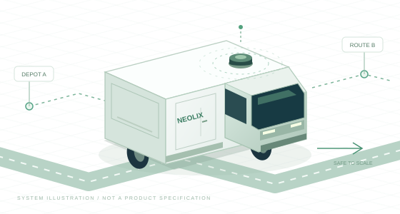

从“车能跑”到“运力赚钱”
先做好快递网点短驳和商超补货，再拓展夜间、跨区及即时货运。以履约、空驶、可用率和人力消耗衡量收益。
单位有效运输成本优势
本方 ≤ 可比竞争方案 × 60%

核验基线，稳住运营
国产平台与交付体系
跨城复制与运维自动化
架构容量与生态准备
用户给定前提 规模不等于日活、已交付或新硬件装车量；百万辆不作为18个月内的交付承诺。M0按2026年11月启动，M12约为2027年11月，M18约为2028年5月。
先做好快递网点短驳和商超补货，再拓展夜间、跨区及即时货运。以履约、空驶、可用率和人力消耗衡量收益。
以成熟量产系统托底，把MPCI、人车比、碰撞风险、算力与标注成本纳入共同验收；世界模型和强化学习按收益投入。
把已有七类背景放到完整交付链中，重点补足L4安全、车辆控制、国产部署及独立验证能力。
我的目标不是单独做出一套更强的算法，而是在可验证的安全约束下，把每一单位有效运输服务的成本持续压低。前三个月先回答三件事：哪些风险必须先解决，成本主要消耗在哪里，现有团队能独立交付哪些环节。前十二个月完成数据评测闭环、国产平台小批量到量产和组织责任落位；十二到十八个月扩大覆盖、提高利用率，为下一年度大规模复制准备能力。
40%的竞争优势必须来自可复算的系统收益：硬件与整车成本、远程协助、维护停驶、补能调度和有效运力共同贡献。企业公开进展用于判断方向，真实竞争优势以同场景运营账本和安全证据验收。
同车型、同载货标准、同ODD、同时效要求。以完成配送的基准OD距离计量，空驶、绕行和失败任务不增加分母。
智驾约占整体TCO的1/3是待校准前提。整体优势还需要整车、协助人力、维修补能与有效运力共同贡献。
截至2026年11月6日，本次检索未找到口径统一、可复核的国内无人配送车行业平均TCO。以下保留企业披露、商业假设与本页测算的区别。
| 公开数字 | 来源与含义 | 使用边界 |
|---|---|---|
| 0.4–0.5元/公里 | 新石器2025年采访披露的综合成本，提及硬件折旧、运营、运维、电费与通信费。[11] | 企业自述；没有公开完整账本及里程定义，不能直接视为行业平均或有效载货公里成本。 |
| 0.25元/公里 | 2026年10月采访用于说明商业模式的假设：自身成本0.25元、向客户收费0.5元。[12] | 不是已核验的实际成本；0.5元在此为服务价格，不能与自身成本混用。 |
| 1.938 → 1.265元/有效km | 本页整车TCO计算器的演示情景。 | 客户账默认联动示例；不是经营实绩。竞品数据未知，不据此排名。 |
口径换算示例：若完整费用为0.5元/实际公里，且有效载货基准OD里程占实际里程70%，则为0.5 ÷ 70% ≈ 0.71元/有效公里。70%为假设，费用范围仍需先统一。
技术负责人同时优化接管、碰撞、算力和标注。前两项连接运营结果，后两项连接达到这些结果所需的资源；以通过安全、实时性和质量验收的最低总成本方案为目标。
用户提供现状 当前1人管20辆；月工资金额未提供。需核验“20辆”是否指同班同时在线车辆，不能用总保有量代替。
月人力成本 → MPCI、单次处理分钟、峰值等待 → 误停与脱困治理、交互规划、站点定位、协助工具及Agent建议。
用MPCI和处理时长减少人工工作量，再通过并发事件与排班演练扩大人车比。现场救援、平台及通信费用另计。
以年度保险费用为成本主线，同时记录免赔额、未覆盖损失及事故直接费用；保险已赔付部分不重复计入。
保费与损失 → 分严重度碰撞率、险情、赔付记录 → 遮挡与近场感知、交互预测、安全规划、载荷制动和独立验证。
MPCI提高不直接证明碰撞减少；保费是否下降要看续保报价。维修、救援按归属只记一次，停驶损失通过有效产出体现。
分开记录车端域控年化成本及增量能耗、云端推理、训练与仿真。与硬件、能源及订阅账逐项对齐。
算力账单 → 单车功耗、峰值时延、内存带宽、有效训练成本 → 共享骨干、量化蒸馏、算子适配、数据去重与实验早停。
国产芯片按真实模型和热稳态选型。节省车端算力后若云调用、人力或碰撞风险增加，必须重新计算净收益。
初期投入基础场景与评测真值；成熟场景复用已有数据，新增人工量集中在长尾、变化场景和独立验证。
标注预算 → 合格样本成本、重复率、返工率与问题闭环收益 → 预标注、时序传播、主动选样、去重及质检辅助。
按实际受益版本、活跃车辆和有效里程摊薄投入；开城、换硬件会增加标注需求，总现金支出不保证持续下降。
高价值数据与更高效模型 → MPCI提高、单次人工处理减少 → 经验证的人车比提高 → 接管成本下降。碰撞率与严重度另行验证，再观察保险与留存损失；最后扣除新增算力、标注和工程投入，核对净TCO收益。
这四项是技术管理视图，不能再整包加到客户运营TCO上：车端算力已归硬件，运行能耗已归能源，研发训练与标注归企业成本；订阅已覆盖的支出不重复计算。
本页口径：MPCI = 同ODD、同版本的自动驾驶有效暴露公里 ÷ 去重后的人工介入事件数，单位km/次；按本次补充将远程协助纳入，再分别展示安全接管、运行协助等子类。此处暴露里程包含符合口径的空载自动驾驶里程，与TCO的有效载货公里分母不同。
每车每小时人工工作量 ≈ 平均运行速度 ÷ MPCI × 平均处理时长。同条件下MPCI翻倍、处理时长不变，平均事件工作量约减半；实际看护车辆数仍受持续监控、交接班、并发事件、等待P95和网络故障影响，不能直接宣称翻倍。
冻结介入触发、去重、失败及超时规则；不允许以不接管、少报事件、换简单路线美化MPCI。零介入样本报告暴露里程和样本边界，不以“无限MPCI”证明安全。
单车年人工费 = 12 × 月雇主全成本S × 排班系数k ÷ q。MPCI与处理时长用于估算平均事件负荷；候选人车比另受峰值并发、等待P95、持续监控和网络故障约束。
保费按实际承保或续保报价录入；MPCI不自动改变保费。留存损失仅计免赔额和未覆盖净损失，已归此处的事故维修不再放入维修行。
客户订阅假定包含研发回收与在线云资源，排除硬件、人工协助、保险。若实际合同为打包服务，应先拆出已覆盖项目再录入。自营账以实际资源替代订阅收费，不将两者相加。
用户提供单价 以下用于本规划预算输入，不是供应商正式报价或经核验的行业均价；含税、预标、质检和返工范围须统一。
| 任务 | 已提供的价格 | 计费及工程处理 |
|---|---|---|
| 3D目标标注 | 0.2–0.3元/object；平均16元/帧（用户已确认） | 按object或按整帧两种估算口径选其一，不能叠加。统一目标密度、属性和质检范围后再比价。 |
| 2D预标后人／车 | 每个ins几分钱，精确单价待报价 | 按人工交付的实例量核算；预标费用、漏标补齐与纠错是否包含需单列，不能将预标输出直接视为合格标签。 |
| barrier／联排锥桶 | 约0.8元/帧 | 用户要求一次质检100%、二次质检100%，两轮全量覆盖抬高单价。自动工具用于辅助核查，本规划保留两轮全量质检。 |
| 人工DCT | 20+元/bag | 保留用户原称；未检索到可核验的统一行业均价。DCT作业定义、bag时长与验收范围未统一，不自行换算为元/帧或元/分钟。 |
构建场景、规则与黄金评测集；校准单价、错误率、质检和返工。
预标注＋主动选样＋去重；优先处理高接管、高风险与模型分歧场景。
成熟ODD降低新增人工强度；新城市、硬件、长尾及独立抽检保留预算。
预算按账单单位相加：3D帧数 × 16元（或object数 × 对应单价）＋ 2D实例数 × 实际单价 ＋ barrier帧数 × 0.8元 ＋ DCT bag数 × 实际单价 ＋ 尚未包含的预标、质检与返工费用。同一交付重复出现时先去重。
规模示例：1万帧3D精标按平均16元为16万元；1万帧barrier为8,000元；1万个DCT bag按20+元为20万元以上。任务规模是假设，三类不可互相替代。2D未给精确单价，不生成虚假精确预算。
管理摊销：按数据受益版本群，将初期投入和后续增量费用归集，再除以对应群体的实际受益活跃车月或有效载货公里。分别展示当期现金支出、累计投入及单位摊销，不用未来百万辆或同一车辆重复覆盖次数做分母；这里不是会计资本化结论。
降低重复标注后必须复核高风险召回、MPCI、闭环碰撞风险与独立评测质量。自动预标出现系统性错误或新ODD退化时恢复人工投入；保留自然分布抽样，避免只标接管片段造成偏差。
按同一受益版本群建账。3D采用整帧16元；不再叠加object单价。barrier的0.8元包含两轮100%质检。2D与DCT数量默认0，仅表示本演示未计入；数量非零时必须补齐精确单价。
I = 初期标注＋初期训练等＋硬件适配NRE；R = 年增标注＋年增训练等。单车年分摊 =（I / 分摊年限＋R）/ 实际受益活跃车辆。首年预算支出按I＋R展示，后续年度按R展示；分摊不是会计资本化。工程人工、数据平台及验证等研发应纳入“等研发”归集；不得在NRE或其他行重复计入，也不能用未来百万辆摊薄。
国产芯片是下一代平台前提。安全和可交付性先准入，再比较域控、整套智驾、整车BOM及生命周期成本。Thor不进入候选池。
*地平线官网对6P的560 TOPS标注为1/2稀疏条件下的有效算力；不同精度、稀疏率和算子不能直接横比。价格、板级功耗和采购条件均待RFQ与实测，不使用推测报价。
M3形成主选与备选报告。未经测量的报价、功耗和性能标为未知；未通过准入的低价方案不进入成本排名。
选择一套完整域控方案；每行价格均包含板卡、内存、存储及随附散热，不是芯片单价。实际候选留空待RFQ与实测，演示行不代表任何供应商。所有候选尚未在本项目通过安全、可靠性和性能准入，暂不做量产排名。
其他套件含传感器、安全控制、线束、清洁及安装标定等，排除已在域控报价中的器件；换候选后须同步校准。非智驾BOM排除整套智驾；采购系数仅客户账使用，自营账取1。年化 = 购置成本 ×（1−残值率）/ 寿命＋购置成本 ×（1＋残值率）/ 2 × 资金率；域控年电费 = W / 1000 × 年通电小时 × 电价。
| 组成 | 安全与运行必需能力 | 降本路径与验证条件 |
|---|---|---|
| 相机、激光雷达与补盲 | 覆盖停车、起步、转弯和倒车近场，满足目标ODD下的可见距离与障碍探测 | 在几何覆盖及退化测试后合并或减配；计入安装、清洗、加热与标定成本 |
| 毫米波与融合感知 | 按速度、目标类型和天气建立功能分工；不能把任一传感器视作全天候保证 | 逐场景验证边际收益，避免重叠堆料或为BOM牺牲关键覆盖 |
| GNSS / IMU / 轮速 | 时间与坐标一致、定位完整性监测、遮挡和干扰下的可控退化 | 融合与在线诊断降低对单一高价器件依赖；保留质量监控与维护校准 |
| 域控、内存与存储 | 实测推理、带宽、内存、记录与通信负载；超时可检测且可处置 | 共享骨干、量化蒸馏、算子适配，比较完整域控而非裸芯片价格 |
| 安全控制与底盘 | 转向、制动、电源和计算故障下的最小风险处置；独立性由危害分析确定 | 功能整合需保留故障隔离；双芯片不自动满足冗余需求 |
| 供电、通信、散热、线束 | 故障隔离、热稳态、时钟同步、通信完整性与环境可靠性 | 接口标准化、可维修模块、减少连接件和标定工序，计入失效率与停驶代价 |
车身与底盘、动力与电池、智驾套件、线束热管理、装配标定及制造损耗分别核算；出厂BOM、售价和运营TCO不可互换。
以本方M0同车型整车BOM = 100为示例目标，待报价及验证校准；不表示实际已降本。智驾套件对应建议目标≤80 / ≤70。
固定模型版本、输入分辨率、传感器频率、任务负载与编译配置，覆盖正常、峰值、热稳态及故障工况。记录精度变化、端到端P50/P95/P99时延、超时次数、CPU/BPU负载、内存带宽、功率与恢复时间。
实时性门槛由ODD速度、载荷、制动能力和感知可用距离反推；P99是性能指标，不能替代超时上界的安全论证。量产报告同时包含风险清单、模型移植成本、供应商承诺、整车验证和全生命周期成本比较。
接管人工＋救援 → 协助行；保费＋未覆盖损失 → 保险行；非智驾车辆＋智驾套件 → 整车折旧与资金成本，域控用电 → 能源行；标注、训练、适配 → 研发分摊（仅自营资源账）。国产平台报价在硬件选型台调整，全部结果自动回填。
浅色项由源参数自动计算；点击各行“修改位置”跳转调整。维修和场站费用可直接在本表录入。
| 竞品降本 | 本方优势 | 40%门槛 |
|---|
竞品参数默认未知；填入同账本、同ODD数据后才计算。切换账本会清空竞品输入，避免混用。图表为情景测算，硬件与看护能力仍待准入验证。
客户运营账：以采购价与服务合同为准。本页无实际售价，暂用出厂成本口径乘采购系数作情景估算；标注、训练和适配通过订阅回收，不单独追加。企业研发节省不会自动成为客户降价，需修改实际收费后才能体现。
自营资源账：车辆以出厂成本年化，在线服务以实际资源消耗核算，同时加入相关研发管理分摊。它帮助技术决策，不是企业完整利润表；销售、税务及其他未归属公司费用不在此模型中。
整车BOM按本页扩展工程口径含装配、标定及制造损耗，所有输入保持同口径。采购系数承担售价估算转换，不能将BOM直接当售价。资金成本按平均占用资金近似计算；折旧与研发管理分摊不等于当期现金支出。
先让每个问题可定位、可复现、可回归，再提高模型上限。已有端到端或无图能力按实际版本核验，不预设当前系统必须重写。
时间同步 / 标定
健康状态 / 融合定位
BEV / 占用 / 盲区
多模态意图 / 不确定性
可行轨迹 / 规则约束
动力学 / 载荷 / 制动
数据挖掘 → 自动标注与质检 → 训练 → 仿真与回放 → 版本候选
订单与车辆调度 → 远程协助 → 工单与救援 → 成本归因
车端执行最终安全校验。云端或Agent不可绕过安全链直接任意控车；网络中断时不依赖远程人员即时接管。
| 业务损失 | 技术与运营指标 | 主要责任 |
|---|---|---|
| 安全风险 | 按严重度区分碰撞、险情、必要接管；结合ODD暴露、版本与置信区间 | 安全负责人＋感知／规划／控制 |
| 人工成本 | MPCI（含远程协助并分类型）、每千有效公里人工分钟、现场救援率、等待P95与经验证的人车比；按工资及实际排班核算 | 运营工程＋规划＋Agent工具 |
| 运力损失 | 服务时段可用率、停驶时长、任务完成率、空驶率、装载率 | 车端研发＋可靠性＋调度运营 |
| 复制成本 | 路线验收到上线用时、人工部署小时、标定工时、跨城回归通过率 | SLAM导航＋系统集成＋城市运营 |
| 研发消耗 | 事件定位时长、黄金数据产出率、问题闭环周期、算力费用、合格标注成本与受益车群摊销 | 数据平台＋模块负责人＋独立评测 |
车辆总量、日活量、同时在线量、新硬件覆盖量分别建账。车端事件采样、分层存储及城市分区限制上云成本；关键事件完整留存，正常数据按统计需求抽样。
| 容量项 | 估算方法 | 验证重点 |
|---|---|---|
| 遥测吞吐 | 同时在线车辆 × 每秒消息数 × 单消息字节数 | 峰值、突发断网补传、城市热点隔离 |
| 数据存储 | 日活车辆 × 日均上传量 × 保留天数 × 存储副本系数 | 事件筛选、冷热分层、过期清理与训练可复现 |
| 远程协助 | 分时事件到达率 × 人均处理时长，结合服务等级建模排班 | 尾部等待、集中故障、交接班与救援，不预设“1人管千车” |
| OTA发布 | 硬件／城市／车型分组，分批下载与受控激活 | 签名、断电恢复、兼容矩阵、回滚和发布故障隔离 |
业务扩张与安全准入共同决定节奏。技术负责人对版本、硬件、ODD和运营证据负责；整车交付数量由制造、供应链和业务共同兑现。
关键事件能关联车辆、版本、传感器与处置记录；成本可追溯；重大风险有控制措施；硬件候选有实际测量。
未达标：保持现有可控ODD，优先修复证据与安全缺口，不强行切换主架构。
长尾集与自然分布集无不可接受退化；故障可检测并受控处置；样机成本与维护方式可核算。
未达标：保留成熟模型与平台交付；研究候选继续离线验证，不占用生产风险额度。
安全证据与服务质量达标；量产一致性、供应质量和售后响应通过评审；经济性在匹配场景内改善。
未达标：停止新批次扩量，按缺陷范围回滚或限定ODD；已有安全版本持续服务。
目标场景内达到或接近相对最优可比方案40%的TCO优势；不足部分明确归因、差距与追加投入回报。
未达标：不宣称领先已实现；收敛低收益场景，优先修正成本与运力约束。
规划目标 除用户明确的40%和现状1:20外，下列倍数、人车比与降幅是初始工程建议。M0–M3冻结基线、样本量和分层方法后批准；当前实际值均待核验。
| 指标 | M12建议目标 | M18建议目标 | 验收约束 |
|---|---|---|---|
| 单位有效运输成本 | ≤可比竞品70% | ≤可比竞品60% | 季度更新竞争基准，固定安全、ODD、载货和服务口径 |
| 未关闭阻断级安全问题 | 0 | 0 | 阻断级定义由安全负责人冻结，不能降级缺陷以满足目标 |
| MPCI / 同ODD与同事件口径 | 候选目标≥M0的2倍 | 候选目标≥M0的3倍 | 绝对基线待测；含远程协助并分类型，不能代替碰撞证据 |
| 同班人均看护车辆 | 验证1:40候选容量 | 验证1:60候选容量 | 当前1:20为用户前提；峰值等待、并发、应急与排班达标才放量 |
| 碰撞与保险成本 | 严重度分层风险无不可接受退化；完成续保对账 | 风险改善有证据，跟踪真实保费及留存损失 | 不从MPCI推算事故率或承诺保费同比下降 |
| 算力与标注投入 | 量产真实负载核算；同成熟ODD减少重复人工 | 单位受益里程摊销下降；新增ODD预算单列 | 同时审查现金支出、预标与质检成本、关键场景质量和时延 |
| 协助人工分钟 / 千有效km | 相对M0下降50% | 相对M0下降70% | 同时满足响应时效，不能用排队或少报事件降成本 |
| 服务时段不可用时长 | 相对M0下降30% | 相对M0下降50% | 纳入故障、维修、缺件、清洁及非计划补能 |
| 场景问题闭环P80周期 | ≤14天 | ≤7天 | 从有效事件立项到验证结论；安全补丁与充分验证不相互替代 |
| 合格路线技术部署周期 | ≤5个工作日 | ≤2个工作日 | 从资料齐备至技术验收；行政准入、施工与物流另列总周期 |
已有成员具备机器人与车端混合经验。岗位安排看真实项目证据：能独立负责、需要导师、需要转岗训练分别标记，背景名称不直接等于量产能力。
学习式决策规划、模仿学习、强化学习与模型蒸馏
构建驾驶任务与动作表达、训练数据和奖励；推进共享模型、学习式规划、离线世界模型实验与国产平台蒸馏。
完成现有规划基线、统一闭环实验接口，复现3类高价值场景的收益与失败案例，形成部署资源画像。
交通交互、车辆动力学、可行轨迹与安全约束；不能直接把机械臂动作模型或通用VLA接入执行器。
与预测、控制、评测配对；按闭环风险、任务完成率、协助需求及部署预算验收，模型规模不是交付指标。
传感器、域控、底盘联调，贯通样车到量产
负责接口契约、时钟与坐标、标定、车辆配置管理及整车故障复现；管理软硬版本兼容矩阵。
一份整车接口与时序图、一套标定验收记录、一张故障矩阵和可复现问题包。
车规电气、EMC与环境可靠性、底盘失效模式、生产一致性、供应商及工厂变更管理。
与整车、制造、国产平台、独立验证合作；按接口缺陷、集成逃逸问题、标定工时及交付一致性验收。
车端运行平台、中间件、诊断、记录与OTA
负责任务调度、进程与资源隔离、消息时序、日志事件、版本追溯、安全升级与回滚。
端到端时延及资源画像；从线上事件到本地回放的最小链路；断电升级恢复与版本兼容演示。
车端实时性、嵌入式故障诊断、看门狗、功能安全机制与异常恢复，减少对互联网重试语义的直接照搬。
与集成、安全、国产平台配对；按时延尾部、超时处置、功耗与算力费用、崩溃恢复和OTA故障率验收。
多传感器融合、BEV、占用表达与近场安全
负责弱势交通参与者、障碍物与道路结构，建立时间一致和带不确定性的环境表达；评估共享骨干收益。
按天气、光照、遮挡、距离与目标类别分层的评测集；高风险漏检清单；精度—时延—成本基线；按3D、2D、barrier分账，核验预标漏标和两轮质检质量。
传感器布置与清洁退化、跨城市分布变化、误检造成的运营损失，以及量化后长尾精度。
与数据、预测、硬件协作；以关键场景召回、误停、时序稳定性、闭环风险与单位合格标注成本共同验收。
多模态行为、交互预测与预测规划协同
预测行人、两轮车和车辆行为及不确定性；构建自车行为对他车反应的交互模型，服务规划训练与仿真。
会车、抢行、横穿等场景的闭环基线；建立离线误差与风险、阻塞、急停之间的关联报告。
反事实交互、概率校准、规划可用性和因果反馈；采用统一模型时转向任务与评价主责，避免重复维护无收益模块。
与VLA、规划控制、仿真配对；联合评价MPCI、交互阻塞和碰撞风险，不能只用ADE/FDE等轨迹误差证明整车更安全。
数据与评测自动化、研发助手、运营辅助
事件聚类、场景检索、标注质检、评测编排、诊断工单与协助建议；优先优化重复性人工流程。
一条具备权限、审计与人工复核的数据处理流程；一套可重放的工具调用记录；对照测量人工节省与错误率。
车端状态一致性、超时与过期指令、幂等及权限边界。涉及车辆的建议须经车端校验，不承担毫秒级驾驶安全链。
与数据平台、运营和安全配对；以人工分钟、预标纠错／质检效率、异常恢复与越权阻断验收；barrier两轮全量质检保持不变。
融合定位、路线拓扑、变化检测与站点进出
GNSS/IMU/轮速与视觉或激光融合、定位完整性；无图场景路线配置、局部道路变化和站点任务衔接。
定位退化与恢复评测、坐标和时钟标定基线、典型站点进出流程及路线变更回归包。
开放道路交通规则、GNSS干扰、长期漂移、动态环境和不同硬件误差。室内SLAM经验需经过车端时速和载荷验证。
与感知、规划、集成和城市运营协作；按完整性告警、退化可控性、站点成功率、定位导致的人工介入与部署工时验收。
岗位评估示例：系统与安全1–2、控制1–2、国产平台2、验证2，共6–8个关键岗位。不是自动新增6–8个HC。
现有人能承担的先转岗培养；新增编制按已确认缺口与实际业务量审批。内部架构和人数未知，不给虚构的现有组织图。
| 合作团队 | 共同交付 | 共同验收 |
|---|---|---|
| 整车／底盘 | 制动与转向能力、载荷边界、安全处置接口 | 故障工况与真实载荷下整车验证 |
| 采购／供应商质量 | RFQ、供货承诺、主备料、变更流程 | 完整BOM、批次质量、停线和质保成本 |
| 制造／售后 | 标定工位、版本追溯、维修模块、备件和服务网络 | 工时、一次通过率、修复时长和停驶损失 |
| 运营／商业／准入 | 场景优先级、路线验收、订单补能、路权条件 | 同场景履约、有效运力和城市利润贡献 |
| 财务／数据治理 | TCO口径、成本归属、竞争基准、数据权限及保留策略 | 可复算账本、数据完整性和审计追溯 |
能力核验、岗位说明、导师配对、关键招聘。所有P0问题有负责人，关键岗位有代班机制。
围绕安全故障、国产平台和数据闭环组建小组；按真实交付评估独立承担能力。
独立验证、统一发布、现场复盘、供应变更；城市部署包可交给另一团队复现。
按质量、效率和运营收益复盘编制；关键岗位双人覆盖，形成下一年人才与预算计划。
工作量建议：60%用于安全与量产交付，25%用于数据评测与平台，15%用于模型前沿探索；探索项目按季度收益门槛续投。
增量预算按100份示例拆分：人才45、数据与训练25、硬件及车辆验证20、运营试点与服务验证10。实际金额、总编制和岗位缺口在M3前由财务及业务共同校准，不将这些预算重复计入客户订阅费用。
核验已交付版本、故障复盘、部署性能、现场问题闭环和独立判断能力；将成员分为“可独立负责 / 导师配对 / 转岗训练”。
每周评审高损失问题与阻塞项；每月联合复盘安全、TCO和技术目标；每季度调整投入。安全放行与模型开发分责，避免同一指标由开发者自行宣布通过。
碰撞按严重度与责任分层；险情定义触发条件；必要接管、远程协助、现场救援单独记录。MPCI含远程协助并分类型统计；介入间隔提高不等于碰撞率下降。
版本、硬件、城市、天气、时段、速度和载荷关联暴露量；零事故样本不等于风险为零，里程增加也不能掩盖困难场景缺失。
独立验证提供结论，安全负责人审查，运营确认应急和服务准备；证据不足时收敛ODD或延后扩量。
| 验证层 | 必须覆盖的场景 | 放行依据 |
|---|---|---|
| 模块与数据 | 关键目标漏检、误检、定位偏差、预测不确定性、数据污染 | 冻结评测集；分层统计；数据血缘与训练／测试隔离 |
| 闭环与仿真 | 遮挡横穿、窄路会车、逆行两轮车、临停、施工和封堵 | 不仅回放开环误差；校准仿真交互与真实事件差异 |
| 台架与故障注入 | 断网、丢帧、时钟漂移、传感器污染、计算过载和供电故障 | 故障可检测、隔离、降级；超时和恢复行为有记录 |
| 整车与场地 | 满载／空载、制动、转弯、倒车、坡道、边界天气 | 实际物理响应满足ODD安全预算，不能只凭软件模拟 |
| 道路与灰度 | 批准ODD内的城市、路线、季节与业务差异 | 按暴露和置信度评审；有对照、有事故复盘、有停止条件 |
| 运营与经济性 | 日夜峰谷、补能排队、协助峰值、缺件维修及站点拥塞 | 真实履约、TCO与可用率共同达标，成本收益可归因 |
新增阻断级安全缺陷、关键场景不可接受退化、最小风险处置失效、批次可靠性异常或运营应急能力不足时，暂停相关版本／硬件／ODD扩量，评估回滚与风险控制。恢复需要独立复验和责任人签署。
触发信号：离线提升、线上协助和误停反而增加。
动作：保留成熟对照，补齐数据分布与闭环场景，停止扩大未验证模型。触发信号：关键算子回退、热稳态超时、供应交付不确定。
动作：提前并行部署验证，冻结兼容接口；既有安全平台与新平台分批交付。触发信号：传感器减配后协助、清洁或救援费用上升。
动作：按全生命周期复算；与运营、财务共同否决只降低BOM的方案。触发信号：故障集中、工单积压、城市部署依赖少数专家。
动作：按服务容量约束放量，建立标准作业包、区域服务和关键岗位备份。现有架构与版本清单、场景及事故问题台账、按车辆与城市拆分的成本账、现有硬件BOM与报价、团队能力与职责清单、生产交付和路权运营约束。拿到之后校准目标，不把未知项写成既成事实。
车队规模、40%目标、智驾约占TCO的1/3、国产平台要求、团队背景，以及现状1:20与标注单价。
官方产品、技术披露与公开采访。企业自述不等同独立安全、规模或成本认证。
用于提炼工程经验；内部判断与效果数字不直接当作核验事实。
阶段交付、KPI、岗位安排及BOM目标，需要在基线核验后批准。
TCO金额、试点数量、关键岗位人数及预算示例，可调整、可复算。
Momenta · 2025.08.18｜支持R6方法路线；不迁移其宣传效果数字为本项目指标。
Momenta · 2026.04.26｜预训练、世界模型仿真与强化学习的三层路线。
新石器官方技术页 · 未标发布日期｜公开能力介绍；具体版本、城市与运营表现仍需内部核验。
新石器 · 2026.05.08｜青岛枢纽与自动补能、服务网络的官方披露；扩展计划与已运营部分分开。
九识 · 2026.10.10｜车端、云端与安全员Agent技术披露，不采用其中“绝对安全”等宣传性判断。
Rino.ai · 2026.07.02｜RX量产、车队协同与跨场景业务进展；计划和实际部署分别理解。
JD Corporate Blog · 2026.08.19｜日配夜补的运营案例，收益不能直接外推至所有城市或车型。
地平线 · 2026.09.11｜物流场景定点依据；不等同本项目量产验证或采购报价。
地平线 · 2025.07.17｜双6M计算方案依据；不证明双芯片自动具备独立冗余。
官方产品页 · 未标统一发布日期｜算力与工具链信息；参数随具体SKU、精度及配置确认。
公开采访 · 2025年｜0.4–0.5元/公里为企业披露的综合成本，未给出完整同口径行业样本。
东方财富转载 · 2026.10.25｜0.25元自身成本与0.5元收费为商业模式假设，不能写为已验证实绩。
本页为技术负责人面试答辩规划，不是新石器官方发布。除本次提供的人车比和标注单价外，内部完整架构、成本账、团队人数、竞争方案TCO及真实安全基线尚未提供；相关规划目标和测算不代表已实现。资料引用就近标注，来源页与本页判断保留区别。
行业竞争已延伸至部署、车规可靠性、调度和服务网络。乘用车辅助驾驶的方法可以迁移；无人配送的ODD、安全责任和经济性需要单独验证。
在端到端基础上引入强化学习，通过模拟环境中的探索改进驾驶行为。
从阻塞绕行、窄路会车、弱势交通参与者交互等高价值场景入手；先建立可信闭环评测，再训练和蒸馏。
Momenta · 2025.08.18 ↗官方路线包含世界模型预训练、闭环仿真，以及在世界模型中进行强化学习。
优先服务长尾场景生成、反事实评测和训练；以真实路测校准仿真偏差，不把合成表现直接当作安全证明。
Momenta · 2026.04.26 ↗| 观察对象 | 已公开的进展与边界 | 对新石器规划的启示 |
|---|---|---|
| 新石器 | 官方展示无图部署，并披露青岛自动补能与服务枢纽投入运营。服务网络拓展属于未来计划。[3][4] | 核验已有能力，重点做稳定性、部署成本、可用率和城市复制；不把“无图”与补能体系从零重建。 |
| 九识 | 2026年10月官方介绍车端VLA、云端VLA与安全员Agent协同；属于企业技术披露，未提供可直接横比的安全及TCO证据。[5] | 关注复杂语义和脱困成本；云端辅助必须有时效、权限和车端安全边界。不能用模型规模替代运营效果。 |
| 白犀牛 | 2026年中报披露RX量产、车队协同和多场景运营探索，强调车规开发与利用率。[6] | 把可靠性、维修替换和订单峰谷调度列为技术交付，不只比较算法功能。 |
| 京东物流 | 官方介绍深圳“日配夜补”案例；6P获第六代配送车Plus项目定点。运营案例、定点、交付分别计数。[7][8] | 验证跨时段利用率收益；国产算力已有物流场景落点，但定点不等于规模安全验证。 |
业务指标分解到模块；优先治理脏数据和评测缺口；统一模型迁移要保留功能负责人；从成熟两段式方案逐步演进。原材料内部现状、MPC等缩写及倍数提升不直接作为核验事实；本次补充的MPCI按人工介入间隔里程单独定义。
面试材料观点